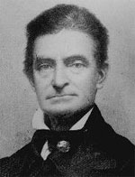

|

|

|
|
|
John Brown was a Northern abolitionist who dedicated himself
to doing battle against slavery in the United States. He
was born on May 9, 1800 the third child of Owen and Ruth
Mills Brown in Torrington, Connecticut, but was raised in
Ohio. Young John, brought up in a devoutly Christian
household, was taught that slavery was an evil. That
upbringing formed Brown into a powerfully persuasive
abolitionist. Unlike many abolitionists at the time, he
supported the use of violence to end slavery. His battles
in Kansas and his raid on Harpers Ferry significantly
hastened the coming of the Civil War.
In 1820, Brown married Dainthe Lusk. Their union produced
7 children. When Dainthe died in 1831, Brown remarried to
16-year-old Mary Ann Day, with whom he had 13 more children.
The family moved from Ohio to Pennsylvania where Brown
opened a tannery. Brown's tannery, like the rest of his
numerous business ventures, was a failure. Brown tried his
luck at farming, raising cattle and sheep. He even invested
others' hard earned money in canals, usually profitable. The
Panic of 1837 foiled his plans to become wealthy once again.
By 1856, Brown had amassed a record of twenty failed
businesses and a bankruptcy.
But while he was unfit for business, Brown thrived in the
anti-slavery movement. A riveting speaker, who used rich
biblical imagery to make his points, John Brown impressed
the small audiences who heard his anti-slavery lectures and
sermons. Soon he developed a base of support from the
movement, including Frederick Douglass. In 1837, at an
abolitionist meeting in an Ohio church, Brown stood and
proclaimed: "Here before God, in the presence of these
witnesses, I consecrate my life to the destruction of
slavery."
Many abolitionists had backgrounds of religiously based
anti-slavery like Brown, and many had similarly pledged in
their own way to see the "destruction of slavery." Brown,
however, was a different breed of abolitionist. He felt his
call was directly from a wrathful God, and that he
personally was an instrument of the Lord's will. Brown often
dreamed of inciting violent slave uprisings that would bring
a bloody, and just, end to the evil of slavery. Brown's
favorite scripture, Hebrew 9:22 attests to this: "Without
shedding of blood there is no remission of sin."
While advocating radical means, Brown's methods continued
to be practical and useful. Brown helped to found and
sustain a free black farming community in North Elba, New
York. There he also worked as a conductor in the Underground
Railroad. One of the few white abolitionists who lived,
worked, and befriended African Americans; Brown enjoyed a
rare respect among his fellow black reformers.
John Brown burst on the national scene when his crusade
against slavery moved from New York to the Kansas Territory,
where 5 of his adult sons established farms. Brown did not
go to Kansas an ordinary settler, far from it. He came to
fight for free soil and abolition. In 1856, Brown joined his
sons in the Pottawatomie Rifles, a militia ground dedicated
to the defense of the anti-slavery headquarters town of
Lawrence. The Rifles arrived too late to protect Lawrence
from a pro-slavery mob, so Brown collected a small band of
men and exacted his own retribution. He and group,
including his sons, used broadswords to hack five
pro-slavery men to death at Pottawatomie Creek late in May
of 1856. This attack inflamed tensions between the North
and South, and was the beginning of a violent summer in
Kansas.
Brown, filled with anger over what he considered the
growing power of slaveholders over the national government,
expanded his efforts against slavery. He organized the
Kansas Regulars, a free soil militia group whose aim was to
fight border ruffians from Missouri. In October of 1856,
Brown began a series of trips between the Kansas Territory
and the East Coast where he raised funds for a free Kansas
from the abolitionist lecture circuit.
As Brown traveled across the East, he developed a secret
plan to liberate millions of slaves. He would recruit and
train a group of committed men in Kansas. With himself in
command, Brown would make a raid into southern territory
thus precipitating a slave uprising. He and his men would
then lead the slaves into the north and freedom. But he
needed money and support for his scheme. He gained the
confidence of six prominent and wealthy men, the "Secret
Six." Although the backers remained willfully ignorant of
the details and violent intent of Brown's mission, they
agreed to finance it. In the late 1850s, Brown carried out
the first part of his plan, and chose his target, Harpers
Ferry, Virginia, a prosperous industrial town and the site
of a major federal armory.
At Harpers Ferry, Brown planned to seize the armory,
distribute them to local slaves who would then in turn
incite many others to join the exodus. Clearly, Brown's
scheme was unworkable, something his friend Frederick
Douglass pointed out to him in their last meeting prior to
the attack. Brown did not listen, and many have claimed that
at this point he was simply crazy.
In any event, the plan was set in motion on October 17,
1859. Brown and 21 men, including several of his sons,
marched into Harpers Ferry and killed five citizens of the
town. They captured the armory and then waited for the slave
insurrection to begin. It never did, and a group of U.S.
Marines under the command of Colonel Robert E. Lee easily
captured Brown and most of his followers, among them several
African Americans.
In November of 1859, Brown was convicted by a Virginia
court of treason, murder, and insurrection. One month
later, on December 2nd, he was hanged for his crimes.
Brown's final message, written shortly before his execution,
said, "I, John Brown, am now quite certain that the crimes
of this guilty land will never be purged away but with
Blood."
John Brown's raid at Harpers Ferry caused a sensation in
the country. Although most northerners condemned his
actions, others considered him a martyr to the cause of
freedom. Ralph Waldo Emerson called him an "angel of light"
and church bells across the North tolled upon his execution.
For the slave-holding South however, he was evil incarnate,
and proof of a Northern conspiracy to destroy the Southern
way of life.
A controversial and disturbing figure, Brown's violent
attack at Harpers Ferry widened the gap between North and
South, and must be counted as one of immediate causes of the
civil war that followed in 1861. Ironically, John Brown
finally enjoyed the success in death that had eluded him in
life.
Source: Joan Waugh, ed., Facts on File Encyclopedia of American
History: Civil War and Reconstruction, 1856 to 1869 (New York: Facts on
File, 2003), 37-39.
|